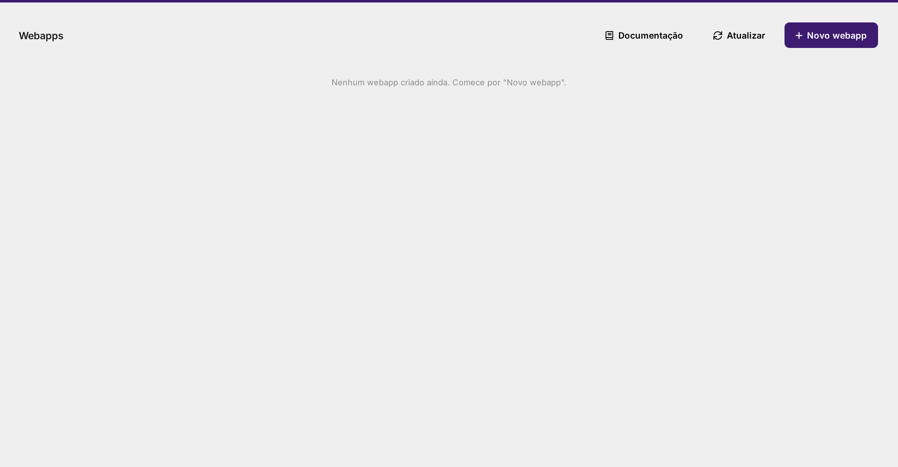
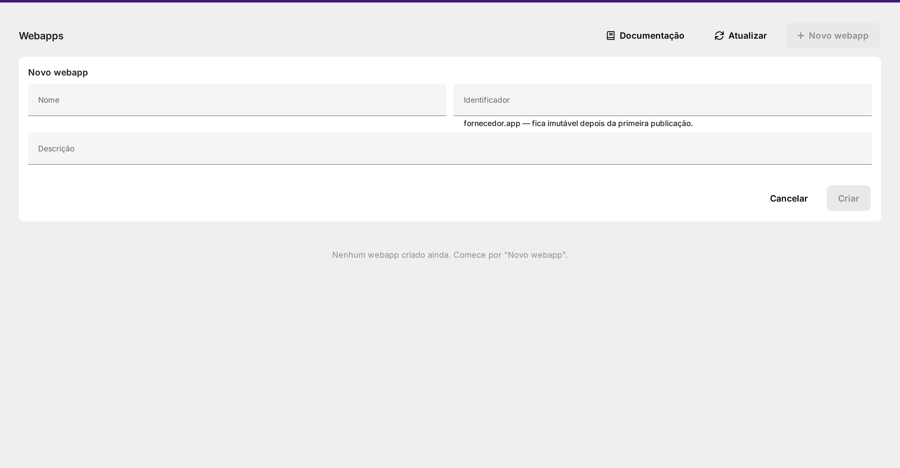
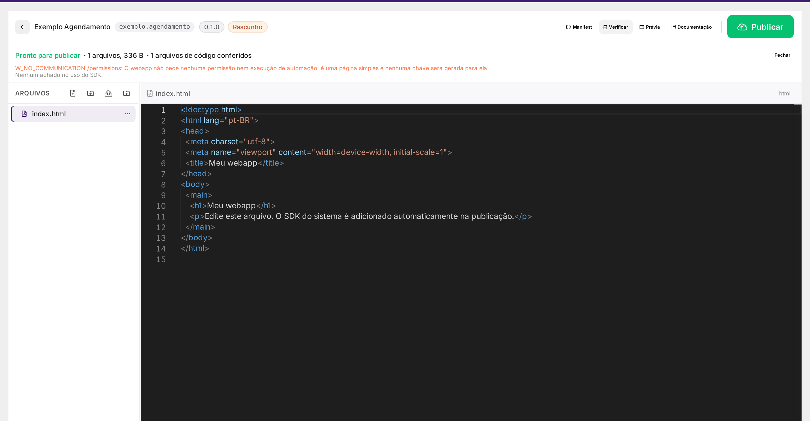
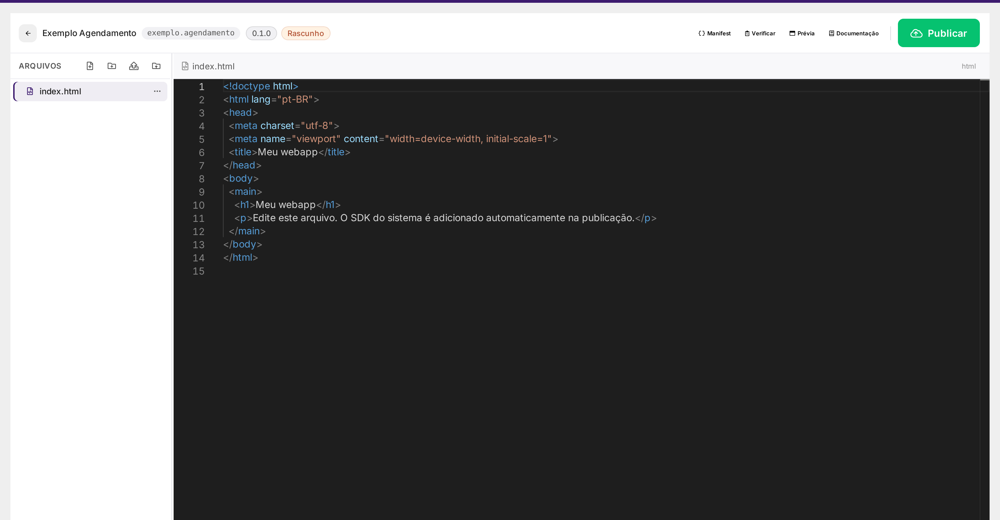
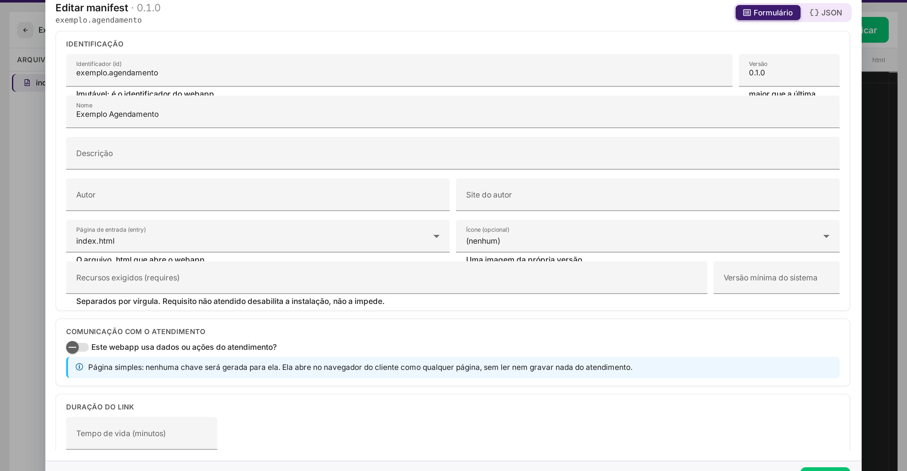
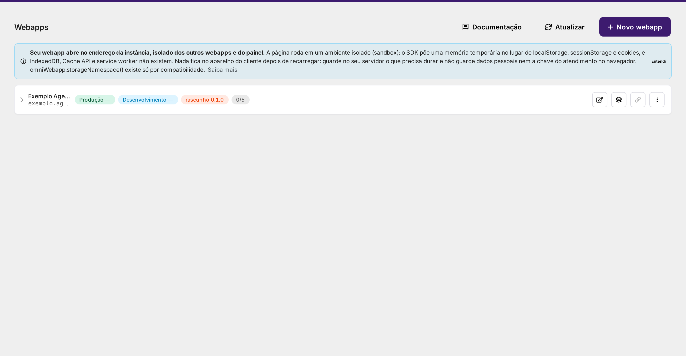

Webapps: páginas do fornecedor dentro do atendimento
Uma página web completa, escrita por um parceiro, que o cliente abre por um botão na conversa e que enxerga os dados daquele atendimento por uma chave temporária. Este capítulo cobre o editor, o manifest, as permissões, a publicação em CDN, o registro na instância e o SDK que roda na página.
O que é um webapp
Um webapp é um index.html e os arquivos que ele carrega, publicados por um parceiro e abertos pelo cliente final no navegador do próprio celular. Nada roda no painel do agente: o atendente não instala nem abre nada.
O que transforma uma página comum em webapp é a chave temporária do atendimento. Quando um fluxo envia o link, ele sai no endereço da própria instância e leva uma chave válida só para aquele atendimento. Com ela a página lê e altera o contato, as oportunidades e o carrinho daquele cliente e dispara automações — sempre no contexto daquele atendimento, nunca em outro. Sem nenhuma permissão e sem automação, o webapp é só uma página: nenhuma chave é gerada.
| Aspecto | Extensão do painel | Webapp |
|---|---|---|
| Onde roda | Dentro do painel, no navegador do agente | Na página do cliente final, no navegador dele |
| Quem usa | Agentes e supervisores | O cliente do atendimento |
| Poder | As permissões de quem está logado | Só o que a chave do atendimento permite, e nada além do concedido |
| SDK | omni | omniWebapp, injetado na publicação |
| Editor | Configurações › Extensões | Configurações › Webapps |
| Instalação | Configurações › Extensões instaladas | Configurações › Webapps instalados |
| Quem pode | Administrador do painel ou supervisor com permissão de editar extensões | Editor ligado na instância; quem registra e habilita é o superusuário (perfis 98 e 99) |
Quem faz o quê
| Papel | Responsabilidade |
|---|---|
| Parceiro (instância com o editor ligado) | Cria o webapp em Configurações › Webapps, grava os arquivos, declara no manifest o que a página precisa, testa na prévia e publica. |
| Administrador da instância (98 e 99) | Registra o webapp em Configurações › Webapps instalados colando a URL do manifest, decide o que conceder (o padrão é nada) e a quais automações a página pode chamar. |
| Fluxo de atendimento | O elemento Enviar webapp gera uma chave nova e manda a mensagem com o botão. |
| Cliente final | Toca no botão e usa a página. |
O editor e a administração são telas diferentes, com permissões diferentes: uma pessoa pode escrever e publicar o webapp sem conseguir registrá-lo na instância, e o contrário também vale. Uma instalação criada pela gestão remota nasce desabilitada e só funciona depois que alguém a revisa e habilita na tela.
Casos de uso
Um webapp vale a pena quando o cliente precisa fazer algo que o chat sozinho não resolve: escolher um horário, corrigir um dado, montar um pedido, consultar um status. Os cinco casos abaixo são os mais comuns; cada linha diz o que a página usa do SDK e o que precisa ser declarado no manifest.
| Caso | O que o cliente faz | O que a página usa | O que declarar |
|---|---|---|---|
| Autoagendamento | Escolhe data e horário de uma visita técnica ou instalação. | contact.get e automations.run (listar horários e gravar o agendamento). | contact: read, runsAutomations e os dois apelidos. |
| Confirmação de cadastro | Revisa nome, e-mail e endereço e corrige o que estiver errado. | contact.get e contact.update. | contact: read e write, só nos campos que a tela edita. |
| Carrinho assistido | Monta o pedido com os produtos do catálogo e converte em oportunidade. | cart.get, cart.add, cart.set e cart.convert. | cart: write e opportunities: read. |
| Consulta de pedido | Vê o status da oportunidade e o histórico do pedido. | opportunities.list e opportunities.get. | opportunities: read. |
| Enriquecimento de endereço | Informa o CEP e recebe o endereço completo para confirmar. | contact.update e uma automação que consulta o CEP. | contact: write e runsAutomations com o apelido da consulta. |

O caminho completo, em oito passos
- Criar. Em Configurações › Webapps, clique em Novo webapp: nome, identificador no formato
fornecedor.webapp(minúsculas, números e hífen, exatamente um ponto) e descrição opcional. O sistema cria o webapp e um rascunho0.1.0com umindex.htmlde exemplo. - Escrever os arquivos. A árvore à esquerda lista a versão; o editor abre o arquivo. O texto é salvo sozinho cerca de um segundo depois de você parar de digitar (
Ctrl+Ssalva na hora). Dá para criar, renomear e excluir arquivos e pastas e enviar arquivos ou uma pasta inteira do computador. - Declarar o manifest. É onde o webapp diz o que é e o que pede: página de entrada, permissões, automações, duração do link e campos de configuração.
- Testar na prévia. A prévia abre a página numa moldura isolada, em três larguras. Sem atendimento ela abre sem chave; com um atendimento seu e aberto dá para gerar um link de teste, que é somente leitura e vale 60 minutos.
- Verificar e publicar. Verificar mostra o mesmo relatório da publicação sem enviar nada. Publicar confere o manifest, injeta o SDK nos HTML, envia os arquivos à CDN e congela a versão.
- Apontar produção. Publicar não coloca a versão em uso: Usar em produção (ou Usar em desenvolvimento, para instâncias de teste) é que move o ponteiro.
- Entregar a URL do manifest. Com a produção apontada, a lista oferece o botão de copiar a URL pública do manifest de produção.
- Registrar e habilitar. O administrador cola a URL em Webapps instalados, revisa o que a página pede, concede o mínimo e habilita. A partir daí o elemento Enviar webapp consegue usá-la nos fluxos.

fornecedor.webapp e descrição opcional. O identificador é imutável depois da primeira publicação.
Exemplo completo: agendamento de instalação
Este é o caminho inteiro com um caso real: o cliente recebe um botão no WhatsApp e escolhe quando quer receber a visita técnica. São três artefatos — o manifest, a página e o contrato das automações — e nenhum deles depende de código no painel.
- Crie o webapp. Em Configurações › Webapps, clique em Novo webapp e informe o nome e o identificador
exemplo.agendamento. O rascunho0.1.0nasce com umindex.htmlmínimo. - Declare o manifest. Troque o conteúdo do manifest pelo bloco abaixo. As duas automações ainda não existem: o apelido é o que liga a página ao fluxo, e o administrador faz essa ligação na instalação.
- Escreva a página. Troque o
index.htmlpelo exemplo. O SDK é injetado na publicação — não há<script>do SDK para colocar. - Verifique e publique. Verificar precisa dizer que está pronta; Publicar envia os arquivos e congela a versão.
- Aponte produção e instale. Use Usar em produção, copie a URL do manifest e registre em Webapps instalados, ligando cada apelido à automação correspondente.
- Use no fluxo. No editor de automação, inclua o elemento Enviar webapp apontando para a instalação. É ele que gera a chave e manda o botão.
O manifest
{
"manifestVersion": 1,
"kind": "webapp",
"id": "exemplo.agendamento",
"version": "1.0.0",
"name": "Agendamento de instalação",
"description": "O cliente escolhe o horário da visita e o fluxo grava a tarefa no CRM.",
"entry": "index.html",
"requires": ["crm"],
"permissions": { "contact": "read" },
"runsAutomations": true,
"automations": [
{ "alias": "listar_horarios", "label": "Listar horários livres" },
{ "alias": "agendar_instalacao", "label": "Agendar instalação" }
],
"session": { "ttlMinutes": 60 }
}A página
<!doctype html>
<html lang="pt-BR">
<head>
<meta charset="utf-8">
<meta name="viewport" content="width=device-width, initial-scale=1">
<title>Agendar instalação</title>
</head>
<body>
<main>
<h1>Agendar instalação</h1>
<p id="cliente">Carregando…</p>
<div id="horarios"></div>
<p id="resultado" hidden></p>
</main>
<script>
omniWebapp.ready(async (session) => {
const contato = await omniWebapp.contact.get();
document.querySelector('#cliente').textContent =
'Olá, ' + (contato.name || 'cliente') + '. Escolha um horário:';
const lista = await omniWebapp.automations.run('listar_horarios', {});
const horarios = (lista.result && lista.result.slots) || [];
const box = document.querySelector('#horarios');
for (const slot of horarios) {
const botao = document.createElement('button');
botao.textContent = slot.label;
botao.onclick = async () => {
botao.disabled = true;
const run = await omniWebapp.automations.run(
'agendar_instalacao', { slotId: slot.id }, { waitMs: 15000 }
);
const saida = document.querySelector('#resultado');
saida.hidden = false;
saida.textContent = run.status === 'finished' && run.result && run.result.ok
? 'Agendado para ' + run.result.data + '. Protocolo ' + run.result.protocolo + '.'
: 'Não foi possível agendar. Escolha outro horário.';
};
box.appendChild(botao);
}
});
</script>
</body>
</html>O contrato das automações
| Apelido | Recebe em webapp_payload | Devolve em webapp_response |
|---|---|---|
listar_horarios | {} | { "slots": [ { "id": "2026-11-20T09:00", "label": "20/11 às 9h" } ] } |
agendar_instalacao | { "slotId": "2026-11-20T09:00" } | { "ok": true, "data": "20/11/2026 09:00", "protocolo": "AG-1042" } |
webapp_payload é dado digitado pelo cliente. Confira o formato antes de gravar no contato, montar uma URL ou usar como alvo de busca. E não devolva em webapp_response nada que o cliente não possa ver.
O editor: arquivos, rascunho e envio
Cada webapp tem um rascunho e até cinco versões publicadas. O rascunho é o único estado editável; versão publicada não aceita escrita, nem pelo editor, nem pela API. Para mexer numa versão já publicada, use Nova versão a partir desta: o sistema cria um rascunho com o próximo número livre e uma cópia dos arquivos.

index.html), à direita o código. As abas do topo levam ao Manifest, ao Verificar, à Prévia e à Documentação; Publicar fica à direita.| O que | Regra |
|---|---|
| Arquivos por versão | 300 |
| Pastas por versão | 100 |
| Tamanho de um arquivo | 4 MiB armazenados (um binário de até 3 MiB, que o sistema guarda em base64) |
| Tamanho da versão | 32 MiB no total |
| Caminho | 191 caracteres, 10 níveis de pasta, 100 caracteres por nome |
| Caracteres do nome | letras sem acento, números, ponto, hífen, sublinhado, @ e ~ |
| Prefixo reservado | __omni/ — é do sistema, não grave nada nele |
| Tipo de conteúdo | Sai da extensão do arquivo; não existe campo de mimetype |
| Binários | Imagem, fonte, wasm, áudio, vídeo e PDF vão em base64, marcados como binários |
| Versões publicadas por webapp | 5 |
O envio de uma pasta descarta node_modules, arquivos ocultos e pastas de sistema, e remove a pasta raiz comum (um dist/, por exemplo). Arquivos .zip não são aceitos: envie os arquivos ou a pasta.
<script> síncrono no início do <head> de cada HTML, antes de qualquer linha sua, entre os comentários omni-webapp:begin e omni-webapp:end. Um HTML que já traz esse bloco é recusado, e o que você lê no editor é sempre o seu código, sem o bloco.
O manifest: campos, permissões e slots
O manifest é um JSON por versão e é validado em dois lugares: o formulário do editor confere enquanto você digita, e o servidor confere de novo ao salvar e ao publicar. Quem manda é o servidor — os dois usam a mesma lista de códigos, no fim desta seção.

{ } JSON edita o mesmo conteúdo em texto.{
"manifestVersion": 1,
"kind": "webapp",
"id": "acme.pedidos",
"version": "1.0.0",
"name": "Pedidos ACME",
"description": "Consulta e confirma o pedido do cliente durante o atendimento.",
"entry": "index.html",
"requires": ["crm"],
"permissions": { "contact": "read", "opportunities": "read", "cart": "write" },
"runsAutomations": true,
"automations": [{ "alias": "confirmar_pedido", "label": "Confirmar pedido" }],
"session": { "ttlMinutes": 60 },
"config": [{ "key": "loja", "label": "Loja", "type": "string", "default": "matriz" }]
}| Campo | Regra |
|---|---|
manifestVersion | Obrigatório: o número 1. |
kind | Obrigatório: exatamente "webapp". |
id | Obrigatório, fornecedor.webapp (^[a-z0-9-]+\.[a-z0-9-]+$), igual ao identificador do webapp. Fica imutável depois da primeira publicação. |
version | Obrigatório, semver X.Y.Z. Ao publicar precisa ser maior que todas as versões já usadas, inclusive as excluídas. |
sdk | Opcional, texto de 1 a 20 caracteres. O servidor grava aqui {version, sha256} do SDK usado ao publicar: não escreva essa forma à mão. |
name | Obrigatório, até 80 caracteres. |
description | Opcional, até 500 caracteres. |
author | Opcional: name (até 120) e url (http ou https). É informação declarada, não verificada. |
icon | Opcional: um arquivo da versão (assets/icone.svg). Nome de ícone do sistema não vale. |
entry | Obrigatório: o arquivo .html ou .htm que abre o webapp, gravado na versão. |
minHostVersion | Opcional, semver. Se for maior que a versão da instância, sai um aviso. |
requires | Opcional: até 20 nomes de recurso, até 40 caracteres cada. Oportunidades e carrinho dependem do CRM: declare "crm". |
permissions | Níveis por recurso: contact, opportunities e cart, cada um none, read ou write. |
runsAutomations | true ou false (padrão false). |
automations | Slots de automação: até 20 itens {alias, label, description?}. |
session | { "ttlMinutes": 5 a 1440 }, o teto de vida do link; sem valor, 1440. |
config | Até 30 campos de configuração, públicos para o cliente final. |
Os caminhos de entry e icon são relativos à versão, sem barra no início e sem \. O prefixo v/1.2.0/ que aparece nos manifests publicados é aceito e removido. O manifest inteiro não pode passar de 256 KiB.
Permissões: o declarado é o teto
write inclui read. Recurso desconhecido é descartado com aviso; nível fora da lista é erro. Nada declarado e runsAutomations falso significa página simples: nenhuma chave é gerada e o link sai sem chave.
Slots de automação
Opcional, e exige runsAutomations: true. Cada slot é {alias, label, description?}: o alias (minúsculas, números e _, começando por letra, até 32 caracteres, único) é o nome que a página usa em omniWebapp.automations.run(); o label (até 60) aparece para o administrador e para o cliente; a description (até 200) é opcional. Com slots declarados, o administrador só consegue mapear aqueles apelidos; sem slots (modo aberto), ele cria os apelidos na instalação.
Configuração: público, sem segredo
Até 30 campos {key, label, type, options?, default?, required?, help?}. A chave começa por letra (letras, números e _, até 40, única), o rótulo vai até 80 caracteres, o tipo é string, number, boolean, url ou select (com até 50 opções), e o valor padrão precisa combinar com o tipo. Não existe tipo secret: todo valor de configuração chega ao navegador do cliente na sessão e é visível para ele.
Chaves que o validador recusa
contributions, worker, embedOrigins e cartPricing são chaves de extensão e dão erro num webapp, mesmo com valor nulo. Qualquer outra chave desconhecida vira aviso e é descartada do manifest publicado.
Códigos do manifest
Os códigos abaixo aparecem no editor, ao salvar e ao publicar. Cada erro aponta o caminho do campo dentro do JSON.
| Código | Quando acontece |
|---|---|
E_NOT_OBJECT | o manifest não é um objeto JSON |
E_MANIFEST_VERSION | manifestVersion ausente ou diferente de 1 |
E_WEBAPP_KIND | kind ausente ou diferente de "webapp" |
E_FOREIGN_KEY | chave de extensão presente |
E_REQUIRED_FIELD | campo obrigatório ausente (id, version, label/type de slot ou de config) |
E_ID_FORMAT | id fora do formato fornecedor.webapp |
E_ID_IMMUTABLE | id diferente do identificador do webapp |
E_VERSION_FORMAT | version ou minHostVersion que não é semver |
E_VERSION_DUPLICATE | já existe versão publicada com esse número |
E_VERSION_NOT_GREATER | a versão não é maior que a última publicada |
E_SDK | campo sdk inválido |
E_NAME_REQUIRED | name ausente ou vazio |
E_NAME_LENGTH | name com mais de 80 caracteres |
E_TYPE | tipo errado ou tamanho acima do limite em um campo genérico |
E_PATH_FORMAT | icon ou entry fora da regra de caminho |
E_RESOURCE_MISSING | icon ou entry apontam para arquivo que não existe na versão |
E_ENTRY_REQUIRED | entry ausente |
E_ENTRY_NOT_HTML | entry não termina em .html ou .htm |
E_PERMISSIONS | permissions não é um objeto |
E_PERMISSION_LEVEL | nível fora de none, read ou write |
E_RUNS_AUTOMATIONS | runsAutomations não é booleano |
E_AUTOMATIONS | automations não é lista, tem mais de 20 itens ou item que não é objeto |
E_AUTOMATION_ALIAS | apelido ausente, fora do formato ou repetido |
E_AUTOMATIONS_REQUIRE_RUNS | há slots com runsAutomations diferente de true |
E_SESSION | session ou ttlMinutes inválidos |
E_ENUM | tipo de campo de config fora da lista |
E_CONFIG_KEY | chave de config ausente, inválida ou repetida |
E_CONFIG_OPTIONS | options ausente em select, presente fora dele ou inválida |
E_CONFIG_DEFAULT | valor padrão incompatível com o tipo |
E_CONFIG_SECRET_UNSUPPORTED | tipo secret — não existe em webapp |
E_INTERNAL | exceção inesperada ao validar |
| Aviso | O que significa |
|---|---|
W_UNKNOWN_KEY | chave desconhecida na raiz, em author, session, slot ou config: foi descartada |
W_UNKNOWN_PERMISSION | recurso desconhecido em permissions: foi descartado |
W_MIN_HOST_VERSION | minHostVersion maior que a versão da instância |
W_NO_COMMUNICATION | nenhuma permissão e nenhuma automação: página simples, sem chave |
W_PERMISSION_NEEDS_REQUIRES | oportunidades ou carrinho declarados sem "crm" em requires |
Versões, publicação e ponteiros
Ao publicar, o sistema executa quatro passos: confere o manifest com as regras de publicação (a página de entrada e o ícone existem, a versão é maior), lê todos os arquivos respeitando os tetos, acrescenta o SDK a cada HTML e envia os arquivos à CDN — recursos primeiro, o HTML por último — e só então marca a versão como publicada. O rótulo (até 255 caracteres) e as notas da versão ficam registrados no histórico.

Se a publicação falhar no meio, a versão continua rascunho e repetir é seguro: o que já subiu é reconhecido e pulado. Dois erros exigem mudar algo no manifest: E_CDN_KEY_EXISTS, quando aquele número de versão já tem na CDN um arquivo com conteúdo diferente, e E_CDN_VERSION_RETIRED, quando o número pertence a uma versão excluída.
| Ponteiro | Para que serve |
|---|---|
| Produção | A versão que os clientes recebem: é o que o administrador instala e o que os próximos envios usam. |
| Desenvolvimento | Serve a instâncias de teste; o manifest desse canal não fica em cache. |
Mover um ponteiro é o rollback: nada é apagado e a versão anterior volta a valer. O manifest de produção pode ficar até 15 minutos em cache de borda, e a instância que instalou o webapp só passa a usar a versão nova depois de reconsultar o manifest ou em até 5 minutos. Permissões novas nunca se ampliam sozinhas nessa troca.
A URL do manifest só existe quando o ponteiro daquele canal aponta uma versão publicada — ter identificador não significa ter publicado. É esse endereço, terminado em /manifest.json, que se entrega ao administrador.
Verificar a publicação
O menu de uma versão em uso traz Verificar publicação: ele lê da CDN o que ela realmente serve e mostra o manifest, o Cache-Control observado, se o HTML tem o SDK e se o endereço do SDK confere. É só leitura. Os valores esperados de cache são public, max-age=900 para o manifest de produção, no-store para o de desenvolvimento e public, max-age=0, must-revalidate para o HTML.
Excluir versão e excluir webapp
- Versão: só se não estiver em uso como produção ou desenvolvimento — mova o ponteiro antes. A versão publicada excluída deixa uma lápide na página dela na CDN: quem ainda tem o link vê “esta página foi removida pelo fornecedor”. A instância guarda a página em memória e confere em segundo plano a cada 6 horas, então a lápide pode demorar esse tempo mais uma visita para aparecer. O número fica queimado e não volta a ser usado.
- Webapp inteiro: com versões publicadas, o sistema pede para digitar o identificador. Os links já enviados passam a mostrar a mesma lápide e o webapp deixa de poder ser instalado.
Registrar e aprovar na instância
A tela é do administrador da instância (perfis 98 e 99) e só aparece quando os webapps estão ligados: Configurações › Webapps instalados.
- Buscar o manifest. Clique em Instalar webapp e cole a URL do manifest de produção. Precisa ser
httpse o manifest tem de estar hospedado na própria plataforma — webapp hospedado fora dela não é instalado. O botão Buscar manifest confere o manifest e a página de entrada sem gravar nada; se algo falha, o motivo aparece na faixa do diálogo. - Ler a tela de aprovação. Antes de instalar você vê, nesta ordem: quem é o webapp (identificador, origem, versão, autor declarado), onde o cliente vai abrir a página e se a entrada abre, o aviso de endereço e isolamento, o que a página poderá ler e alterar em palavras, a matriz de permissões e os campos que podem ser estreitados, o mapeamento das automações, a política de chave, a configuração pública e a frase-resumo do que está sendo concedido.
- Conceder o mínimo. A matriz começa em Sem acesso. O botão Conceder tudo o que o webapp declara copia o declarado; abaixo dele ficam os estreitamentos — quais campos do contato, quais funis e campos de formulário de oportunidade, quais campos do formulário do carrinho. Combinações incomuns, como escrever no contato e ler CPF/CNPJ ao mesmo tempo, recebem aviso vermelho.
- Mapear as automações. Cada apelido declarado é ligado a uma automação da instância, escolhida por número, com nome e data da última modificação à vista. Qualquer pessoa com um link válido pode disparar a automação liberada, no atendimento daquele link.
- Definir a política de chave. Cada link vale N minutos contados do envio, com N limitado ao que o webapp declarou (5 a 1440). Depois do encerramento do atendimento o link continua abrindo, mas só para leitura, até o prazo acabar — o que foi concedido vale também nesse período.
- Habilitar. Habilitar é ato separado da instalação e exige credencial de escopo total. A instalação nasce sem nada concedido e desabilitada; desabilitar derruba na hora todos os links já enviados, e eles não voltam ao reabilitar — é preciso enviar links novos.
| Ação | Efeito |
|---|---|
| Desabilitar | Nenhum link enviado volta a funcionar e o elemento Enviar webapp passa a recusar. A configuração e a concessão ficam preservadas. É o botão de emergência quando um fornecedor é comprometido ou a página é sinalizada por filtros de reputação — que atingiriam o domínio da instância. |
| Habilitar | Exige escopo total; é recusado enquanto o manifest não estiver em cache ou faltar recurso que ele exige. Habilitar não concede nada. |
| Revogar links | Mata os links já entregues sem desabilitar. Sem atendimento indicado, revoga todos os da instalação; com um atendimento, só os daquele atendimento. Nenhuma ferramenta mostra ou gera chave: um link novo só nasce quando o elemento roda num atendimento real. |
| Reconsultar o manifest | Rebusca o manifest no fornecedor, atualiza a versão em cache e reavalia requisitos. A concessão é recortada ao que a versão nova declara; o que ela passou a pedir a mais fica pendente de aprovação. Reabilita sozinha só a instalação que ela mesma desligou por requisito não atendido. |
| Remover | Remove configuração e concessão, revoga todos os links e faz os elementos Enviar webapp que apontam para ela falharem com WEBAPP_NOT_FOUND — a tela mostra em quantos fluxos isso acontece. Reinstalar gera um id novo, e os fluxos precisam ser reapontados. |
Como o cliente recebe o link
A instalação sozinha não envia nada: o link só é gerado pelo elemento Enviar webapp de um fluxo. A cada execução nasce uma chave nova, vinculada àquele atendimento e ao contato dele; o link abre no domínio da instância (o cliente vê o endereço da empresa, não o da CDN) e o texto vai com botão de URL nos canais que suportam botão, ou com o link no fim da mensagem nos demais.
O elemento recebe o número da instalação e o identificador do webapp; se os dois não corresponderem, nada é enviado. Ele também não reenvia o link quando o próprio webapp disparou aquele fluxo, e limita a 10 links por hora por atendimento e webapp. Nos canais com janela de 24 horas, janela fechada significa mensagem não enviada, com o código WINDOW_CLOSED — este elemento não envia modelo aprovado.
Os códigos de retorno, as variáveis de resultado e as regras por canal estão na ficha do elemento: sendWebappMessage.
O SDK omniWebapp na página
O SDK é o window.omniWebapp. Ele chega injetado no HTML pela publicação e é a única porta para os dados do atendimento. O link tem esta forma:
https://<domínio da instância>/static/webapp/<instalação>/v/<versão>/<entrada>?s=1#k=<chave>O marcador ?s=1 só serve para o SDK reconhecer um link cortado pelo aplicativo que o abriu; a chave vai no fragmento #k=, que o navegador não envia a servidor nenhum nem ao Referer. O SDK a mantém apenas em memória. Uma página aberta sem chave fica no estado keyless: continua sendo uma página, sem nenhuma chamada de rede.
omniWebapp.ready(function (session) {
const nome = session.identity ? session.identity.displayName : 'visitante';
document.querySelector('#ola').textContent = 'Olá, ' + nome;
if (session.chatClosed) mostrarSomenteConsulta();
});ready(cb) chama a função quando o início termina (inclusive sem link) e whenReady() devolve a mesma coisa como Promise. Se o início falhar, a função não é chamada: para isso existem o evento error e o estado. A sessão traz o que a página pode usar sem outra chamada:
| Campo da sessão | Conteúdo |
|---|---|
permissions | O efetivo, já limitado pelo que o administrador concedeu |
automations | Os apelidos liberados, com o nome de cada um |
config | Os valores públicos declarados no manifest |
identity | displayName e numberHint, só com permissão de contato |
cart | available e clientConvert |
chatClosed | Verdadeiro quando o atendimento terminou e a página está em modo consulta |
expiresInSec, locale, uiLocale | Prazo restante do link e idioma das telas do SDK |
Para decidir o que mostrar, use omniWebapp.can('cart', 'write') e omniWebapp.hasAutomation('confirmar_pedido'). Antes de pedir dado sensível, confira session.identity: o link pode ter sido repassado, e mostrar o nome do titular é a forma de o cliente perceber isso.
Métodos por namespace
| Namespace | Métodos |
|---|---|
| raiz | ready, whenReady, on, off, retry, can, hasAutomation, storageNamespace — mais as propriedades version, apiVersion, state, mode, locale, keyless, error e instanceHost |
session | current, get, remainingSec, refresh, end, scrubAddress |
contact | get, update |
opportunities | list, get, update |
cart | get, ops, add, set, remove, clear, setForm, convert |
automations | list, run |
ui | setEnabled — liga ou desliga as telas desenhadas pelo próprio SDK |
Toda chamada que fala com o servidor devolve uma Promise cujo valor é exatamente o data da resposta e rejeita com um erro que tem code, status, retryable, attempts e, quando faz sentido, retryInMs. Valores em dinheiro do carrinho vêm em centavos inteiros.
Chamar uma automação
if (omniWebapp.hasAutomation('confirmar_pedido')) {
const run = await omniWebapp.automations.run('confirmar_pedido', { cep: '01310-100' }, { waitMs: 8000 });
if (run.status === 'finished' && run.result) {
console.log(run.result);
}
}A página usa o apelido, nunca o nome nem o número do fluxo. O waitMs padrão é de 8 segundos (máximo 20) e representa quanto a chamada espera pela primeira volta da automação; se ela demorar mais, a resposta chega como running. A automação roda no atendimento real do link, com uma visão privada das variáveis daquela execução:
| Variável | Conteúdo |
|---|---|
webapp_payload | O objeto que a página enviou, higienizado ({} se não enviou nada) |
webapp_id | O identificador do webapp (por exemplo acme.pedidos) |
webapp_install_id | O número da instalação |
webapp_alias | O apelido pedido |
webapp_run_id | Identificador único da execução |
webapp_response | Escrita pelo fluxo: o resultado que volta para a página (até 32 KB) |
O payload chega inerte: o sistema neutraliza {{ }} nele e nunca o avalia. Trate webapp_payload como você trata o texto digitado pelo cliente — valide antes de levá-lo a uma variável do contato, a um alvo de busca de atendimento, a uma URL ou a um cabeçalho de requisição. E lembre que webapp_response volta para o navegador do cliente: não ponha nele o que o cliente não pode ver.
Estados, eventos e erros do SDK
| Estado | Significado |
|---|---|
booting | Iniciando: validando o endereço e falando com a instância; as chamadas esperam |
ready | Pronto, com chave válida |
keyless | Página aberta sem link de atendimento: só página, sem rede |
expired | O link expirou ou foi revogado (terminal) |
closed | O servidor recusou até a leitura (terminal). Atendimento encerrado com consulta possível não muda o estado: continua ready com session.chatClosed |
ended | A própria página encerrou a sessão (terminal) |
error | O início falhou; só INSTANCE_UNAVAILABLE se resolve com retry() |
Os eventos disponíveis são ready, session, permissions, expiring (120 segundos antes do fim do link), expired, closed, ended, error, offline, online e call — este último ao fim de cada chamada de rede, com método, caminho, status, duração e número de tentativas, sem cabeçalho, corpo nem chave.
| Código | HTTP | Repete sozinho | Quando |
|---|---|---|---|
BAD_REQUEST | 400 | não | Requisição inválida: o SDK recusou o argumento antes de enviar, ou o servidor recusou o corpo |
UNAUTHORIZED | 401 | não | Link inexistente, expirado ou revogado, instalação desligada ou recurso desligado — a resposta é sempre a mesma, para não dar pista |
PERMISSION_DENIED | 403 | não | O webapp não tem permissão para a operação |
PERMISSION_REVOKED | 403 | não | A permissão foi reduzida depois de o link ser emitido; o SDK relê a sessão uma vez |
TEST_KEY_READONLY | 403 | não | Chave de teste da prévia: somente leitura |
FIELD_NOT_ALLOWED | 403 | não | Campo fora da lista permitida; details.fields traz os recusados e nada foi gravado |
AUTOMATION_NOT_ALLOWED | 403 | não | Apelido desconhecido, não liberado ou fluxo excluído |
CONVERT_DISABLED | 403 | não | Nesta fila o pedido é finalizado pelo atendente |
NOT_FOUND | 404 | não | Não encontrado, sem dizer o motivo |
METHOD_NOT_ALLOWED | 405 | não | Verbo HTTP não permitido na rota |
CONTACT_NOT_LINKED | 409 | não | O atendimento ainda não está vinculado a um cadastro de contato |
CART_INACTIVE / CART_UNAVAILABLE | 409 | não | A fila não usa carrinho sincronizado / ainda não há carrinho no atendimento |
CART_LOCKED / CART_EMPTY | 409 | não | Carrinho bloqueado / vazio |
CART_NOT_CONVERTIBLE / CONVERT_REFUSED | 409 | não | O carrinho não pode ser finalizado agora / o pedido não pôde ser finalizado |
CONVERT_IN_PROGRESS | 409 | não | A finalização já está em andamento; retryInMs sugere quando olhar de novo |
PRESCRIPTION_REQUIRED | 409 | não | Há produtos que exigem receita; details.missingPrescription lista quais |
CONFLICT | 409 | não | O carrinho mudou desde a versão informada em expectedVersion |
RUN_IN_PROGRESS | 409 | não | Já existe execução em andamento neste atendimento para esta instalação |
REQUEST_IN_PROGRESS | 409 | sim | Requisição idêntica ainda em andamento; o SDK espera e repete até 3 vezes |
CHAT_CLOSED | 410 | não | Atendimento encerrado: escrita e automações recusadas; as leituras seguem valendo até a chave vencer |
PAYLOAD_TOO_LARGE | 413 | não | Conteúdo grande demais |
UNSUPPORTED_MEDIA_TYPE | 415 | não | O corpo precisa ser JSON |
VALIDATION_FAILED | 422 | não | Dados inválidos; details traz campo e motivo de cada recusa |
RATE_LIMITED | 429 | sim | Muitas requisições: o SDK espera retryInMs (até 10 s), pausa as seguintes e repete até 2 vezes |
AUTOMATION_THROTTLED | 429 | não | A automação foi executada vezes demais neste atendimento |
INTERNAL_ERROR | 500 | não | Não foi possível concluir; nunca é repetido em silêncio, porque a operação pode ter sido feita |
CHAT_NOT_LOADED | 503 | sim | O atendimento está sendo carregado (instância acabou de iniciar) |
SERVICE_UNAVAILABLE | 503 | sim | Serviço indisponível no momento |
AUTOMATION_SUSPENDED | 503 | não | A automação está suspensa pela instância |
NO_SESSION | — | não | Página sem link de atendimento, ou sessão já encerrada |
NETWORK / TIMEOUT | — | sim | Falha de rede / prazo estourado (15 s; em automations.run, waitMs mais 12 s) |
ABORTED / BAD_RESPONSE | — | não | Chamada cancelada pelo signal / resposta fora do envelope esperado |
INVALID_LINK | — | não | Endereço que não é um link válido: chave malformada, página não aberta pela instância (por exemplo o endereço direto da CDN) ou servidor que não respondeu como uma instância |
LINK_INCOMPLETE | — | não | Link cortado: tem o marcador s=1 mas não a chave |
INSTANCE_UNAVAILABLE | — | retry() | A instância não respondeu ou está desligada |
UPDATE_REQUIRED / SDK_REVOKED | — | não | SDK da página antigo demais, ou revogado: a chave não é enviada |
UNSUPPORTED_BROWSER | — | não | Falta fetch ou Promise, ou o navegador abriu a página sem o isolamento exigido — nesse caso o SDK interrompe a página |
Depois do encerramento do atendimento
O link continua abrindo depois que o atendimento termina — para o cliente confirmar um dado ou responder algo —, mas em modo consulta, até o prazo acabar. Nesse modo o servidor recusa tudo o que muda algo com CHAT_CLOSED (410), e as leituras de contato e de oportunidades já vinculadas continuam funcionando. Três cuidados na página:
- Leia
session.chatClosednoreadye esconda ou desabilite os botões de escrita; as permissões de escrita já chegam reduzidas a leitura. - Trate o evento
closed, que sai uma vez com{ code: 'CHAT_CLOSED', readOnly: true }. O estado continuareadye o SDK não desenha tela: a decisão do que mostrar é da página. - Não espere automações nem carrinho:
session.automationsfica vazio esession.cart.availablefica falso.
Isolamento, armazenamento e segurança
A instância entrega a página com Content-Security-Policy: sandbox e sem allow-same-origin: para o navegador, cada página é um documento de origem opaca. O código do parceiro não alcança o login nem os dados do painel, o que outro webapp guardou, nem as outras páginas do próprio webapp. As chamadas da página saem com Origin: null e sem cookies — a lista de origens permitidas do servidor do fornecedor precisa aceitar null ou *.
| Recurso | Na página publicada |
|---|---|
localStorage, sessionStorage | Memória temporária que o SDK instala antes do seu código: a API é a mesma, mas some ao recarregar e tem teto de 5 milhões de caracteres |
document.cookie | Memória temporária (até 50 cookies); nenhum cookie é enviado a servidor |
| IndexedDB, Cache Storage, service worker | Não existem: lançam erro |
new Worker(url) | Só com blob:, porque um arquivo da página é de outra origem |
BroadcastChannel, window.opener | Não conversam com outras páginas; o SDK zera window.opener |
| Arquivos da página | Só por caminho relativo; cada arquivo que não é .html chega por redirecionamento à CDN, que o navegador guarda por 1 hora |
| Requisições aos próprios arquivos | São entre origens diferentes: só GET e HEAD, cabeçalhos simples mais content-type e authorization |
| Política de conteúdo própria | 'self' bloqueia os seus arquivos, porque eles vêm da CDN: se precisar de política, liste também a origem da CDN |
| Quadro para outra página do webapp | Não carrega; use srcdoc, blob: ou fetch com innerHTML |
Outra página .html da versão | Abre com o SDK, mas sem a chave: cada página é um documento novo. O que depende do atendimento fica numa página só, com roteador por hash |
| Permissões do navegador (câmera, microfone, localização, área de transferência) | As já concedidas à instância não valem para a página; o navegador pergunta de novo |
O que cada nível de permissão permite
write nunca é cheque em branco, porque quem segura a chave é o cliente. As listas são fixas no servidor e tudo é filtrado por lista branca: campo fora dela simplesmente não existe para a página.
| Recurso | read | write |
|---|---|---|
| Contato | Nome, e-mail, telefone, data de nascimento e endereço; CPF/CNPJ, campos livres e campos extras só se o administrador liberar | Somente campos de perfil que não identificam a pessoa (nome, e-mail, nascimento, endereço); o telefone nunca é alterado; CPF/CNPJ só se estiver vazio e liberado; consentimento e opt-outs ficam fora |
| Oportunidades | As oportunidades abertas ou congeladas deste cliente, nos funis e campos que o administrador marcar | Só os campos de formulário que o administrador liberar |
| Carrinho | Itens, preços, descontos já aplicados, totais e os campos de formulário liberados | Adicionar, alterar e remover itens, preencher o formulário liberado e, só se a fila permitir que o cliente finalize, finalizar o pedido; nunca frete, desconto nem nota interna |
| Automações | Lista os apelidos liberados | Executa os apelidos liberados, no atendimento real, e recebe webapp_response de volta |
A chave temporária
- Formato opaco, gerada a cada envio, nunca um JWT; o servidor guarda só o resumo dela.
- Vale para um atendimento, fixado na criação. Encerrado o atendimento, ela não morre: continua valendo até o prazo, em modo consulta. Se o atendimento for reaberto, ganha número novo e a chave antiga nunca passa para ele.
- Prazo absoluto por instalação (padrão 24 horas, de 5 a 1440 minutos). O que ela pode fazer é avaliado ao vivo, não fica gravado nela.
- Na API viaja só no cabeçalho
Authorization; no link, no fragmento#k=, que o navegador não envia a servidor nenhum nem aoReferer. - Enquanto a página está aberta, qualquer script dela consegue ler a chave no endereço. Não carregue scripts de terceiros em páginas de webapp, e peça prazo curto quando a página lida com dado sensível.
session.identity antes de pedir dado sensível: o link pode ter sido repassado.
Riscos conhecidos e aceitos nesta versão: a página aparece sob o domínio e o cadeado da instância, e o isolamento protege o painel mas não impede que uma página falsa de login ou pagamento do fornecedor pareça legítima — por isso se aprova apenas fornecedor conhecido e se desabilita a instalação ao menor sinal; a chave aparece na mensagem, no histórico e em exportações, o que se mitiga com prazo curto, ausência de log e modo consulta após o encerramento; um navegador embutido que ignore o isolamento é interrompido pelo SDK, mas scripts já em execução não podem ser parados.
Limites da API que a página usa
| O que | Limite |
|---|---|
| Corpo de uma chamada | 128 KB |
payload de uma automação | 64 KB depois de higienizado |
webapp_response | 32 KB |
| Execuções de automação | 6 por minuto por link; 20 em 2 minutos por automação e atendimento; 1 por vez, com 1 segundo entre elas; até 8 simultâneas na instância |
| Operações de carrinho numa chamada | 50 |
| Escritas | 30 por minuto por link (10 para o contato) |
| Chaves de teste na prévia | 10 por hora por atendimento |
Quando um limite é ultrapassado, o SDK recebe RATE_LIMITED, PAYLOAD_TOO_LARGE ou AUTOMATION_THROTTLED, com retryInMs quando faz sentido esperar.
O que não existe nesta versão
- Envio do link fora da janela de 24 horas por modelo do WhatsApp: o elemento não envia e anota
WINDOW_CLOSED; use um modelo aprovado pelos meios normais. - Link enviado por assistente de IA, por campanha ou por envio automático.
- Link em URA telefônica e em ligações.
- Mini App do Telegram e equivalentes de outras plataformas.
- Anexos do carrinho e histórico de pedidos pela página.
- Chave que valha para mais de um atendimento, “voltar ao chat” e troca de atendimento com a mesma chave.
- Escrita depois do encerramento do atendimento.
- Recurso de pesquisa na API do webapp: para responder uma pesquisa, use o mecanismo da própria pesquisa.
- Link para um atendimento que já terminou.
- Modo simulado na prévia: ela usa a API de verdade, com chave somente leitura.
- Envio de
.zip— envie os arquivos ou a pasta. - Armazenamento que sobreviva ao recarregamento no aparelho do cliente.
- Webapp hospedado fora da plataforma: só se instala o que foi publicado pelo editor da própria plataforma.
Diagnóstico: sintomas e causas
O cliente vê uma tela do SDK
| Sintoma | Causa provável | O que fazer |
|---|---|---|
| Link expirado | A chave passou do prazo, foi revogada ou o webapp foi desabilitado | O cliente precisa de um link novo, que só sai de um novo envio no atendimento |
| Atendimento encerrado | O servidor recusou até a leitura do atendimento | Link novo, em novo atendimento aberto; não há “reabrir” com a mesma chave |
| A página abre depois do encerramento mas não grava | Modo consulta | Esperado: leia session.chatClosed, esconda os botões de escrita e trate o evento closed |
| O link não abre mais depois de algumas horas | Prazo da duração do link vencido | Peça duração maior ao administrador, dentro do teto declarado no manifest |
| Página desatualizada | SDK da página antigo ou revogado | Republicar o webapp: a publicação injeta o SDK vigente |
| Serviço indisponível | A instância não respondeu, ou os webapps estão desligados nela | Tentar novamente; se persistir, falar com o administrador |
| Link inválido ou incompleto | O link foi cortado ou alterado ao ser copiado | Reenviar pelo fluxo |
| Página não encontrada na página publicada | Webapps desligados na instância, instalação desabilitada ou removida, endereço errado | Reabilitar em Webapps instalados e enviar link novo |
| Esta página foi removida pelo fornecedor | A versão do link foi excluída (lápide) | O fornecedor publica de novo; o cliente precisa de link novo, que segue a produção |
Página abre, mas fetch, módulos, fontes ou Worker falham em silêncio | A CDN não libera CORS para páginas em sandbox, ou a página usa cabeçalho próprio ou método diferente de GET nos próprios arquivos | Mande cabeçalhos e métodos especiais ao servidor do fornecedor, não aos arquivos da página |
| Navegador incompatível num aplicativo embutido | O navegador ignorou o isolamento e o SDK interrompeu a página | Pedir ao cliente que abra no navegador do aparelho |
Ao verificar, publicar ou testar
| Sintoma | Causa | O que fazer |
|---|---|---|
E_CDN_KEY_EXISTS | Aquele número de versão já tem na CDN arquivos com conteúdo diferente | Aumentar o número da versão no manifest |
E_CDN_VERSION_RETIRED | O número pertence a uma versão excluída | Usar um número maior |
E_INJECT_ALREADY | O HTML já contém o bloco omni-webapp:begin | Remover o bloco: o servidor o acrescenta sozinho |
| “Publicação indisponível nesta instância” | A CDN ou o SDK não estão configurados na instância | Editar e testar normalmente e acionar o suporte |
| “Já existem 5 versões publicadas” | Teto atingido | Escolher qual apagar, nunca a que está em uso |
| Página em branco na prévia | Caminhos absolutos (/assets/app.js) apontam para a raiz da instância, não para a pasta do webapp | Usar caminhos relativos; o Verificar acusa ABSOLUTE_ASSET_PATH |
localStorage some ao recarregar, IndexedDB lança erro | Isolamento da página | Esperado: guarde no servidor do fornecedor o que precisa durar |
| Nada acontece ao gerar o link de teste | O atendimento precisa estar aberto e ser seu | Conferir a mensagem na tela e o atendimento escolhido |
O botão não chega ao cliente
WINDOW_CLOSED: a janela de 24 horas do canal está fechada; o elemento não envia e é preciso um modelo aprovado antes.- O canal não tem botão de URL: o elemento manda o texto com o link no fim.
WEBAPP_DISABLEDouWEBAPP_MISMATCH: o webapp está desabilitado, ou o elemento aponta para outra instalação.NO_CHAT: não há atendimento real — é automação de CRM, ticket ou pesquisa, ou ligação.
Checklist antes de publicar e antes de habilitar
- A página de entrada e o ícone existem e o nome bate com o arquivo.
- O manifest não pede nada além do que a página usa — cada permissão a mais é um argumento a mais para o administrador recusar.
- Todos os caminhos são relativos e não há
<base href>. - Nenhum HTML traz o bloco do SDK e nenhuma política de conteúdo restringe a
'self'. - O teste foi feito com atendimento aberto e link de teste, conferindo o painel de chamadas.
- O número da versão é maior que todas as anteriores, inclusive as excluídas.
- O fornecedor é conhecido e o autor declarado confere com quem entregou.
- A página de entrada abre e carrega o SDK.
- A concessão está no mínimo: nada de escrita sem necessidade, nenhum campo sensível liberado por conveniência.
- Cada automação mapeada foi lida antes de ser liberada e trata
webapp_payloadcomo dado de cliente. - A duração do link é a menor que atende ao uso.
- A configuração não tem segredo — ela é pública para o cliente final.